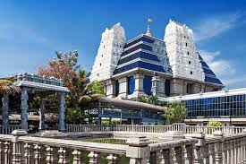

- Iskcon is known all over for being some of the most beautiful, active, spiritual and
religious centres in the country.
- One such temple, Iskcon Hyderabad can be found in the
Nampally region.
- The main deity in Iskcon Hyderabad temple is Lord Krishna.
- One can also see idols of Sri Gaura-Nitai, Sri Jagannatha Baladeva-Subhadra and Sri Radha Madana-Mohana.
 Home
Home